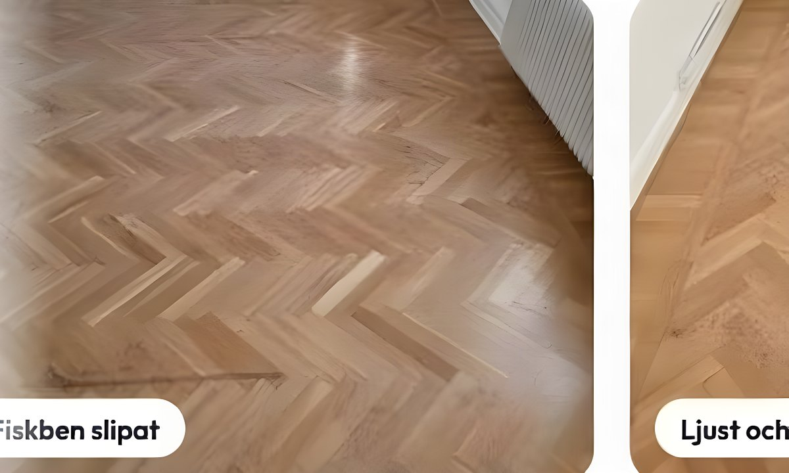

Tjänst · Uddevalla & Trestad
Slipning som får ditt golv att se nytt ut
Under repor och grå yta ligger nästan alltid ett bra trägolv. Vi slipar fram det och behandlar det — lack, olja eller pigment.

Golvslipning — så gör vi
Ett trägolv som legat i trettio år har tjockt nog med trä kvar för att slipas om flera gånger. Det är därför ett gammalt golv ofta blir vackrare än ett nytt: årsringarna, mönstret och dimensionerna finns redan.
Vi börjar med att titta på underlaget. Är trät fuktskadat, genomgånget eller ligger det ojämnt i förhållande till resten av huset säger vi det innan vi börjar — hellre ett tråkigt besked i tid än en överraskning halvvägs.
Sedan slipar vi i flera steg, spacklar springor och kvistar, och behandlar ytan. Matt lack tål mer än folk tror, olja ger en mer levande yta som går att bättra lokalt. Vi går igenom skillnaden med dig, för det är du som ska leva med golvet.
Priset sätts efter besiktning. Vi ger ett riktmärke direkt på telefon och ett fast pris när vi sett ytan. ROT-avdrag drar vi av direkt på fakturan där det gäller.
Det här ingår
- Kostnadsfri bedömning av golvet på plats
- Slipning i flera steg, inte bara en övergång
- Spackling av springor och kvistar
- Kant- och trösklar slipas för hand
- Lack, olja, hårdvax eller pigment
- Trappor och mindre ytor tas med samma besök
- Dammsugning och avtorkning efteråt
Arbetsgång
Från första samtal till färdigt resultat
- 1
Hör av dig
Ring eller skicka några rader om ytan — kvadratmeter, träslag och hur golvet ser ut i dag.
- 2
Vi tittar på golvet
Vi kommer ut, känner på trät och säger vad som är möjligt. Det kostar ingenting.
- 3
Fast pris och datum
Du får skriftligt pris och en tid. Sedan slipar vi, behandlar och städar.
Frågor om golvslipning
Vanliga frågor
Behöver jag flytta ut medan ni slipar?
Möbler flyttar vi undan tillsammans. Du behöver inte flytta ut, men räkna med att rummet inte går att använda under själva slipningen och torktiden.
Luktar det mycket?
Vattenbaserad lack och olja luktar betydligt mindre än de gamla lösningsmedlen. Vi vädrar under arbetet och säger till om ett rum behöver stå tomt över natten.
Hur länge håller en slipning?
Så länge ytbehandlingen klarar sig. Lack i hall och kök slits snabbare — då kan man bättra eller lägga ett nytt lager utan att slipa om allt.
Går det att slippa dammet?
Det mesta fångas i maskinen. Vi maskerar dörrar och täcker ytor, men helt dammfritt blir det aldrig. Räknas med ärlig inställning, inte löften.
Kostnadsfri offert på golvslipning
Skicka några rader om ytan, eller ring — vi svarar samma dag.